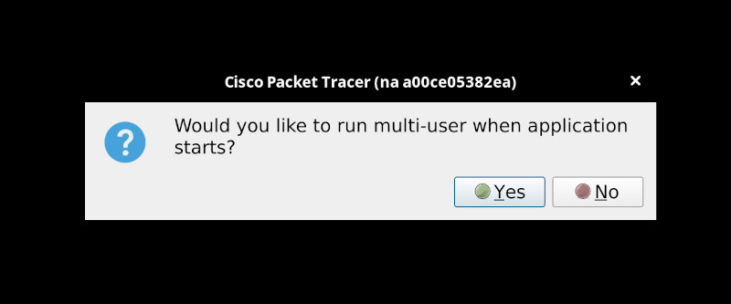
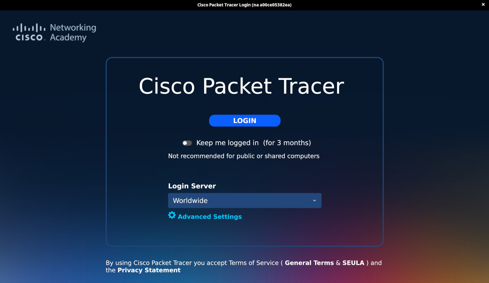
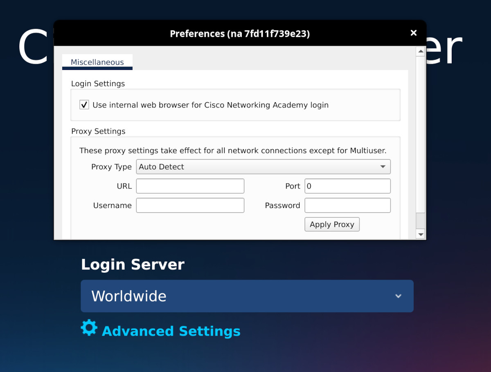
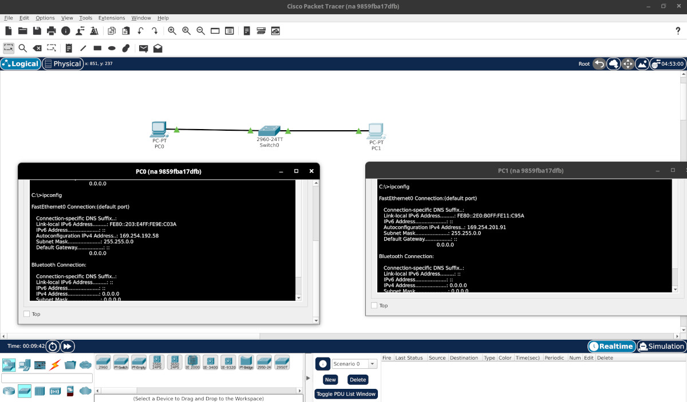

Cisco PacketTracer#
I needed to install Cisco PacketTracer app.
It is required for this course:
There are three problems:
- I don't use Ubuntu to install the only provided package for Linux
- No way I will run software like this directly on my system
- Installing in VM will eat my RAM and disk space
So I made a tiny script to build and run this blob inside a Linux container.
It is in this repo: bitsnips
The image is still little bloated - but that is the norm these days...
If you check my Dockerfile then you will notice that I really did maximum to
keep the image small (squashing the layers might help a little).
REPOSITORY TAG IMAGE ID CREATED SIZE
localhost/cisco_packettracer latest 9a51015287b7 24 hours ago 1.32 GB
First Run#
Please check the repo for the README and guidance - I will not cover it
here extensively.
Download the deb package#
The application is free to download here (if the link changes try to search for it...):
Build the image#
Adjust the CISCO_FILE or save it as:
download/CiscoPacketTracer_900_Ubuntu_64bit.deb
Run the build:
./cisco_packettracer.sh build
Run the container#
./cisco_packettracer.sh run
If the build was successful and you are using Xorg then it should work
fine.
On the startup couple of windows will show up.
I was not sure what is the question here and I just clicked no:

Setting Up#
The script will mount local directory on your system so the Cisco app can store login credentials - otherwise you would have to re-login on every run...
I recommend to enable the "Keep me logged in":

For some reason spawning browser from within the container stopped working but you can click on "Advanced Settings" and enable internal web browser:

Then you login:
And Voilà:

It works!